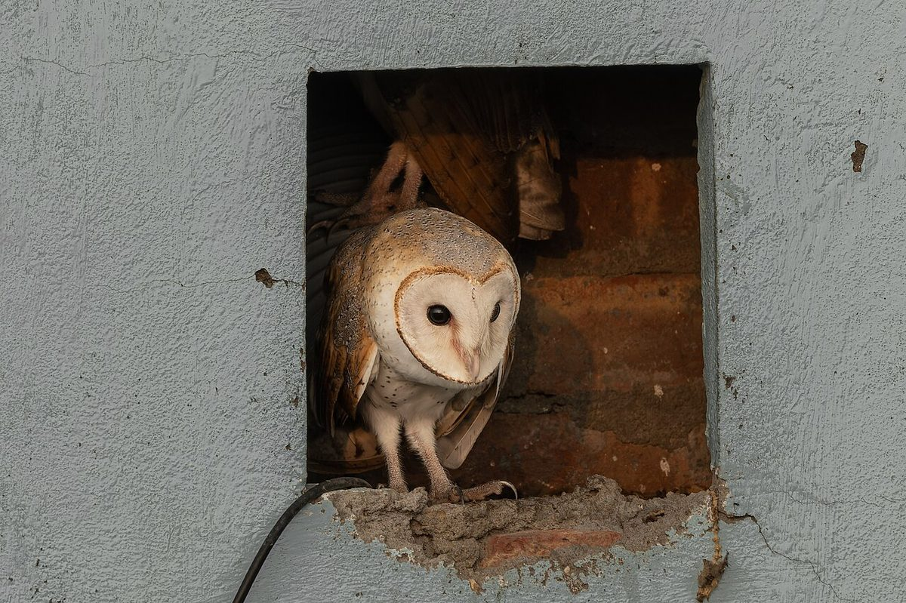

A family of barn owls moved onto a rooftop water tower in the heart of New York City — the first barn owl nest anyone can remember in Manhattan.
New York City has eight million people, more pigeons than anyone can count, and a surprising number of real-estate lists. This month it has something rarer than a parking spot: a family of barn owls, living on a water tower on the Upper West Side.
A nest on top of a city
The owls settled into a water tower perched on a roof near Central Park, on West 75th Street. A water tower is one of those big wooden tanks you see sitting on rooftops, originally built to hold water and create pressure for the buildings below. It is warm, quiet, high up, and hard to reach — which, if you are a barn owl, is just about perfect.
To one expert, this is the first documented case of barn owls nesting in Manhattan in modern history. Barn owl sightings are rare in the city at all, so a whole family raising babies here is big news.
How the secret got out
The owls kept a low profile for a while. Then, on October 6, an Upper West Side resident named Elisabeth Williams and her husband spotted several owls at the water tower and told a local news outlet. After that, the secret was very much out.
Now photographers and curious neighbors gather on the street most nights, looking up and hoping for a glimpse of the elusive birds. The owls have become the neighborhood's unexpected celebrities.

Meet the family
David Barrett, a Manhattan-based birder who runs the popular social account Manhattan Bird Alert, has been watching closely. He has seen at least one adult barn owl and five chicks, called fledglings, up at the tower. He has also watched an adult owl fly in carrying rodents — barn owls hunt small mammals, so the water tower dinner bell is ringing on schedule.
There are believed to be two adult owls raising the family, and some photographers say they have counted as many as six chicks. Barrett put it simply: one barn owl in New York is rare, but a family breeding in Manhattan for the first time on record is genuinely special.
Residents have also reported hearing screeching at night. That is very barn owl. Those birds do not really "hoot" the way storybook owls do — they make a harsh, shriek-like call they use to talk to each other.
A gentle giant of the owl world
Barn owls are striking to look at. They have a pale, heart-shaped face, golden-brown wings, and dark eyes. They are found on several continents and hunt by sound at night, using their sharp hearing to find small animals in total darkness. They are usually shy and avoid people, which makes a rooftop nest over a busy street all the more surprising.
City officials and volunteers are keeping a respectful distance for now. The best thing anyone can do for birds like these is give them space, keep flash photography off, and let them raise their chicks in peace.
Why it matters
Wild animals turning up in surprising places is becoming a quiet theme in cities — and it cuts both ways. For the owls, a tall rooftop can feel safe and full of rats and mice. For people, it is a small reminder that nature does not stop at the city limits.
Next time you are walking a city street at night, look up every so often. You never know whose home is sitting on the roof above you.
Sources: NPR — A rare family of barn owls moved into Manhattan's Upper West Side. New Yorkers are captivated · AP News — Barn owl family in Manhattan's Upper West Side captivates New Yorkers